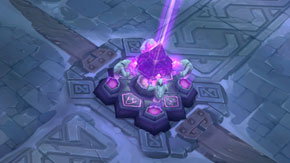

| Inicio | Campeones | Objetos | Invocadores | Modos de Juego |
 Defender y destruir
Defender y destruirLo que empezó siendo un movimiento de la comunidad no tardaría en convertirse en uno de los modos de juego más populares de League of Legends de hoy en día. El Abismo de los Lamentos (también conocido como Puente del asesinato) cuenta con dos equipos de cinco campeones que compiten en un solo carril, sin territorio neutral. Los campeones empiezan la partida en nivel 3, con una importante cantidad de oro inicial, y se sumergen inmediatamente en un combate repleto de largas peleas de equipo, muertes instantáneas y huidas arriesgadas. |
||
| La Batalla por el Abismo | ||
 El Abismo de los Lamentos es el único campo de batalla con un solo carril de League of Legends. Cuenta con dos bases situadas a ambos lados de un puente. El puente está protegido por dos torretas y un inhibidor, mientras que el nexo está defendido por un par de torretas. Dado que no hay un territorio neutral que distraiga a los jugadores de la acción principal, en el Abismo de los Lamentos se ven peleas de equipo con más frecuencia e intensidad que en cualquier otro mapa.
El Abismo de los Lamentos es el único campo de batalla con un solo carril de League of Legends. Cuenta con dos bases situadas a ambos lados de un puente. El puente está protegido por dos torretas y un inhibidor, mientras que el nexo está defendido por un par de torretas. Dado que no hay un territorio neutral que distraiga a los jugadores de la acción principal, en el Abismo de los Lamentos se ven peleas de equipo con más frecuencia e intensidad que en cualquier otro mapa.
|
||
| Mantener la velocidad | ||
 Sin curación ni poder comprar La plataforma de invocador del Abismo de los Lamentos no cura y las compras están estrictamente limitadas. Los campeones sólo podrán adquirir objetos después de producirse una muerte en el campo de batalla. El hechizo Recuperación también está desactivado en este modo de juego. |
 Reliquias de Vida Al no haber una plataforma de curación, habrá Reliquias de Vida diseminadas por el puente, en intervalos equidistantes. Una vez consumidas, estas reliquias hacen que los campeones regeneren rápidamente Vida y Maná durante un corto periodo de tiempo. |
 Un único inhibidor Con sólo un carril por conquistar, el único inhibidor de tu equipo puede marcar la diferencia entre el éxito o el fracaso en una partida. Cuando es destruido, el equipo atacante empezará a generar dos súper súbditos por oleada. Defiende tu inhibidor a cualquier precio. |
| Acerca de LoL | Acerca del Creador de LoL | Comunidad de LoL | Mapa del Sitio |

| Videojuego Creado por | Contáctame |

|


|